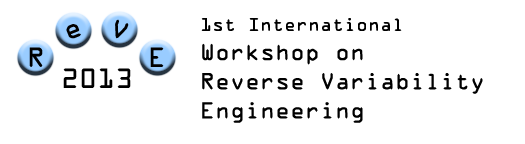

Topics
We will encourage submissions that push the state of the art and practice in the following topics (but not limited to):- Refactoring theories and techniques for SPLE
- Feature and concept location techniques applied in the variability context
- Clone detection techniques for identifying code and model similarities
- Literature reviews on evolution and reverse engineering of software product lines
- Case studies and benchmark examples for reverse engineering tools
- Mining variability from software repositories
- Program analysis for reverse variability engineering
- Reverse engineering of feature models
- Reverse engineering of derivation templates for code generation
- Reverse engineering of variability management related enriched models for model instances derivation
- Product Line Architecture reengineering
- Tacit knowledge and collaboration during re-engineering process
 Home
Home
 Call for papers
Call for papers
 Topics
Topics
 Important dates
Important dates
 Submission details
Submission details
 Workshop program
Workshop program
 Program Committee
Program Committee
 Organizers
Organizers
Held in conjunction with